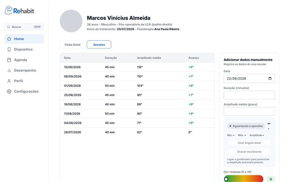
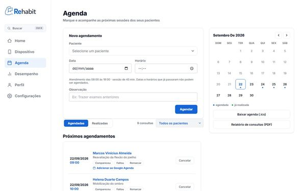
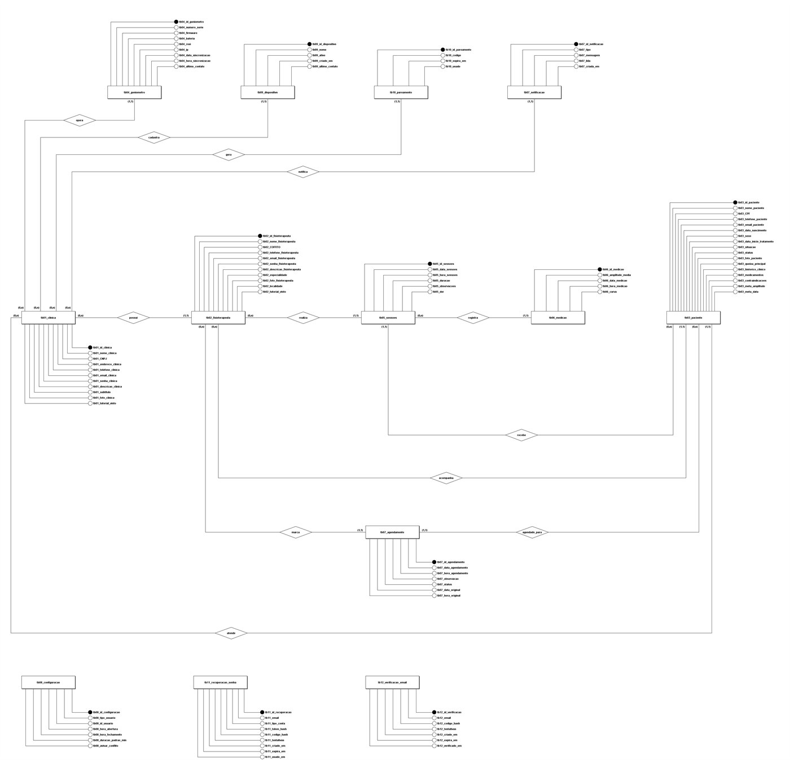

TCC · Etec Prof. Carmine Biagio Tundisi · 2026
A evolução do paciente, medida em graus.
O Rehabit une um goniômetro digital a um sistema web para clínicas de fisioterapia: o ângulo da articulação chega à tela em tempo real, e cada sessão vira um ponto no gráfico de evolução do paciente.

O projeto
Por que um goniômetro digital
A amplitude de movimento é um dos principais sinais de que a fisioterapia está funcionando. Na prática, ela ainda é muito avaliada a olho, e mesmo com o goniômetro manual falta um padrão de medida. A ideia surgiu de quem viveu isso de perto: um professor da escola e um integrante do grupo, ambos em tratamento, não tinham um jeito confiável de comparar o avanço de uma sessão para a outra.
-
Estimativa visual
A avaliação feita a olho é menos precisa do que a medida com goniômetro (ANDRADE et al., 2003).
-
Falta de padrão
Sem um protocolo para posicionar o paciente e o aparelho, as medidas deixam de ser comparáveis entre sessões e entre profissionais (NORKIN; WHITE, 2016).
-
Evolução invisível
Anotadas em fichas, as medições não viram um gráfico que o profissional e o paciente consigam acompanhar.
Objetivo
Desenvolver um goniômetro digital integrado a um software que ajude fisioterapeutas a realizar e acompanhar medições articulares, com mais precisão, padronização e praticidade na avaliação dos pacientes.
Metodologia
Levantamento bibliográfico nas bases Google Acadêmico, SciELO, PubMed e Nature, e entrevista com profissional de fisioterapia atuante no mercado.
Veja funcionando
O goniômetro em ação
Na tela Dispositivo, o mostrador acompanha cada leitura enviada pelo aparelho. Durante a captura, o sistema guarda o menor e o maior ângulo do movimento, e a amplitude é a diferença entre os dois.
Quer ver o sistema por dentro? A conta de demonstração tem uma clínica fictícia com pacientes e meses de sessões. Dá para navegar à vontade: nada pode ser alterado.
Leitura ao vivo
Ângulo enviado pelo goniômetro
0°
- Mínimo
- –
- Máximo
- –
- Amplitude
- –
Como funciona
Do sensor ao histórico do paciente
-
Mede
O goniômetro, preso ao segmento que se move, calcula o ângulo da articulação com um acelerômetro e um giroscópio.
-
Transmite
Pelo Wi-Fi, cada leitura chega ao sistema e aparece na tela do fisioterapeuta em tempo real.
-
Registra
O fisioterapeuta grava o movimento completo: a amplitude e a curva do movimento ficam salvas na sessão e entram no gráfico de evolução.
Arquitetura
Funcionalidades
O que o sistema faz
-
Pacientes e profissionais
Cadastro de pacientes com anamnese e meta de tratamento, e de fisioterapeutas ligados à clínica.
-
Agenda e consultas
Marcação de sessões, presença e faltas, exportação para o Google Agenda e lembrete pelo WhatsApp.
-
Evolução em gráfico
Cada sessão guarda duração, dor relatada e amplitude, e a ficha mostra a evolução e o progresso até a meta.
-
Goniômetro ao vivo
Mostrador com o ângulo atual, gráfico dos últimos 60 segundos, mínimo, máximo e amplitude.
-
Desempenho
Indicadores por profissional: sessões realizadas, altas concedidas e ganho médio de amplitude.
-
Relatórios em PDF
Relatório da evolução do paciente e das consultas, pronto para imprimir ou enviar.
-
Acesso protegido
Confirmação do e-mail por código, verificação anti-robô e recuperação de senha.
-
Tema claro e escuro
Todas as telas têm as duas versões, para o uso confortável em qualquer ambiente.
Telas
Por dentro do Rehabit
Imagens da conta de demonstração, uma clínica fictícia criada para apresentar o projeto. Clique numa tela para ampliar.







Hardware
O goniômetro digital
Um ESP32 com um sensor MPU6050 (acelerômetro e giroscópio), programado pela equipe, mede o ângulo e envia cada leitura ao sistema pelo Wi-Fi.
- Zero na pose do paciente. O ângulo é medido a partir do braço pendurado ao lado do tronco, então a placa funciona presa em qualquer orientação.
- Leitura estável. Um filtro complementar combina acelerômetro e giroscópio.
- Tempo real. As leituras chegam ao navegador por Server-Sent Events, com consulta periódica como reserva.
- Pareamento seguro. O aparelho se liga à clínica por um código de 6 dígitos e usa um token próprio, que pode ser revogado.
- Economia de bateria. O servidor dita o ritmo: 10 leituras por segundo gravando, uma a cada 2 segundos parado.
Validação
Como o projeto está sendo testado
O plano do projeto prevê testes funcionais e unitários para validar a precisão dos sensores, o tempo de resposta do sistema e a segurança dos dados.
-
Em uso
Testes automatizados da API
Testes de integração cobrem as regras mais sensíveis: exclusão de conta, sessões, conta de demonstração e verificação anti-robô.
-
Previsto
Precisão do sensor
Comparar as leituras do aparelho com as de um goniômetro universal em ângulos conhecidos e registrar a diferença.
-
Previsto
Tempo de resposta
Medir quanto tempo leva entre o movimento do paciente e a leitura aparecer na tela do fisioterapeuta.
Tecnologias
Como foi construído
- Front-end
- HTML, CSS e JavaScript puros, com animações em GSAP
- Back-end
- API REST em Java 17 com Spring Boot
- Banco de dados
- PostgreSQL (H2 no desenvolvimento)
- Hardware
- ESP32 e MPU6050, firmware em C++ (Arduino)
- Hospedagem
- Vercel para o site e Render para a API


Documentação
O modelo do banco de dados (clique na imagem para ampliar) mostra como clínicas, profissionais, pacientes, sessões e medições se relacionam. Todo o código, inclusive o firmware do goniômetro, é aberto.
Equipe
Quem fez o Rehabit
Trabalho de Conclusão de Curso do Ensino Médio com Habilitação Profissional de Técnico em Desenvolvimento de Sistemas da Etec Prof. Carmine Biagio Tundisi, em Atibaia (SP), 2026.
- Jonatan Schaak
- Matheus Gonçalves da Silva
- Matheus José Almeida Aparecido
- Nathan Carvalho da Cunha
- Steven Seigo Nakashima
Orientação: Prof. Leonardo Victor Ferreira de Lima e Prof. Sergio Montagner.
Conheça o Rehabit por dentro
Entre na conta de demonstração ou cadastre uma clínica para experimentar o sistema.
Referências
- ANDRADE, Júnia Amorim et al. Estudo comparativo entre os métodos de estimativa visual e goniometria para avaliação das amplitudes de movimento da articulação do ombro. Acta Fisiátrica, v. 10, n. 1, p. 12-16, 2003.
- NORKIN, Cynthia C.; WHITE, D. Joyce. Measurement of joint motion: a guide to goniometry. F. A. Davis, 2016.